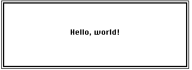

Getting Started
Let's begin by looking at the source code for a simple application. Consider Listing 1-1.Listing 1-1 A simple Macintosh application
PROGRAM GreetMe; VAR gWindow: WindowPtr; {pointer to a window record} gString: Str255; {the string to display} gRect: Rect; {the window's rectangle} BEGIN InitGraf(@thePort); {initialize QuickDraw} InitFonts; {initialize Font Manager} InitWindows; {initialize Window Manager} InitCursor; {initialize the cursor to an arrow} {set the position of the window} SetRect(gRect, 100, 100, 400, 200); gString := 'Hello, world!'; {set the greeting to be displayed} {create a window} gWindow := NewWindow(NIL, gRect, '', TRUE, dBoxProc, WindowPtr(-1), FALSE, 0); SetPort(gWindow); {set the current drawing port} WITH gWindow^.portRect DO {set the position of the pen} MoveTo(((right - left) DIV 2) - (StringWidth(gString) DIV 2), (bottom - top) DIV 2); TextFont(systemFont); {set the font} DrawString(gString); {draw the string} REPEAT {loop until the mouse button is pressed} UNTIL Button; END.The application GreetMe defined by Listing 1-1 simply displays the window shown in Figure 1-1 and exits as soon as the user presses the mouse button.Figure 1-1 The window created by the simple application

This application is remarkably simple, but also quite revealing about some important aspects of Macintosh programming. Consider the call that creates the window in which the greeting is drawn:
gWindow := NewWindow(NIL, gRect, '', TRUE, dBoxProc, WindowPtr(-1), FALSE, 0);This call to theNewWindowfunction creates a window at the specified location in front of any existing windows on the screen. TheNewWindowfunction is a good example of the kind of routines provided by the system software. These routines greatly simplify the creation of the standard "look and feel" of Macintosh applications. By using these routines, you can ensure that your application conforms as closely as possible to the standard Macintosh user interface and hence that users find your application easy to learn and use.Let's take a closer look at the call to
NewWindow. TheNewWindowfunction requires eight parameters, whose meanings are described in Table 1-1.
Parameters passed to NewWindowin Listing 1-1 (Continued)Parameter Meaning NILThe address of a window record, a data structure that contains information about the new window. Specifying NILas the address of this structure instructs the system software to allocate that required storage itself.gRectThe window's bounding rectangle. This is the rectangle that encloses the new window. The values of the desired rectangle are specified by the previous call to SetRect, which defines the upper-left and lower-right corners of the rectangle.''The window's title. The new window has no title bar, so this parameter is specified as the empty string. TRUEAn indication of whether the new window should initially be visible or not. This parameter is set to TRUEto indicate that the window is indeed to be made visible.dBoxProcThe type of window you want to create. The Macintosh user interface includes a great variety of window types for different purposes. For present purposes, the standard modal dialog box is appropriate. The constant dBoxProcidentifies that type of window.WindowPtr(-1)The new window's initial plane (or layer) relative to any other existing windows. This parameter is a window pointer to the window behind which you want the new window to appear. The system software recognizes two special values here. If you pass NILin this parameter, the new window appears behind all other windows. If you pass -1, the new window appears in front of all other windows. Because theNewWindowfunction expects a window pointer in this parameter, you need to typecast the special value -1 asWindowPtr(-1).FALSEAn indication of whether the window has a close box or not. This parameter is set to FALSEto indicate that no close box is desired.0An application-specific reference number. This number is put into a particular field of the new window record, and can be useful to you if the window has specific data associated with it. Because there is no such data associated with this window, this parameter is set to 0. The
NewWindowfunction returns a window pointer, which is the address in memory of a window record. The window record contains important information about the window (such as its current location on the screen and the current font and size of text that is to be drawn in the window). When you call a system software routine to perform some operation on a window, you'll typically pass a window pointer as a parameter to that routine. For example, in Listing 1-1, the window pointer is passed to theSetPortprocedure to set the new window as the current drawing window.Another notable element of Listing 1-1 is the
- IMPORTANT
- You need to call
SetPortbefore you do anything at all that affects the contents of a window, such as drawing graphics or text in the window, or even just erasing the contents of the window.
DrawStringprocedure, which draws the specified string in the current font at the current drawing location. By default, the current drawing location in a new window is the upper-left corner. In this case, remaining at that location would make the greeting unreadable, becauseDrawStringuses the vertical coordinate of the current point as the baseline of the text to be printed. Instead, GreetMe calls theMoveToprocedure to move the current pen location to a point that centers the greeting in the window:WITH gWindow^.portRect DO {set the position of the pen} MoveTo(((right - left) DIV 2) - (StringWidth(gString) DIV 2), (bottom - top) DIV 2);TheMoveToprocedure requires 2 parameters, the horizontal and vertical coordinates within the window of the new drawing position. The origin--point (0,0)--of a window is at its upper left corner. Horizontal coordinates increase as you move from left to right, and vertical coordinates increase as you move from top to bottom. The coordinates passed toMoveToare calculated from the left, top, bottom, and right coordinates of the window (obtained from theportRectfield of the window record).